To-Do: A Long-Distance Relationship Solution for Couples
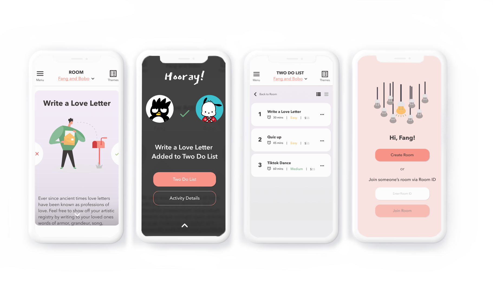
Process
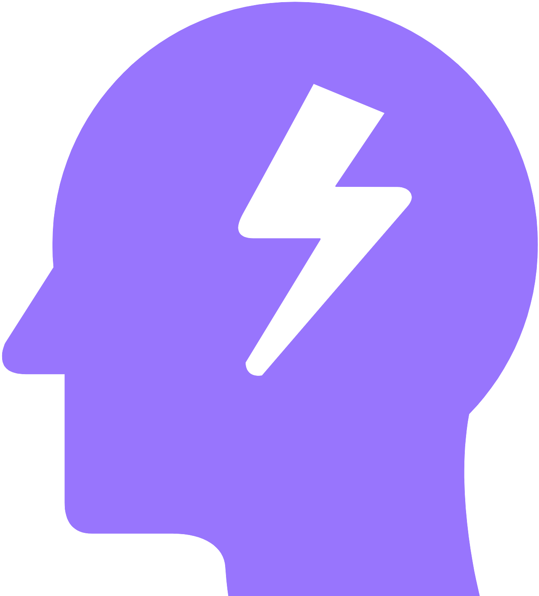
Brainstorming
Brainstorming and testing out concepts based upon the problem statement.
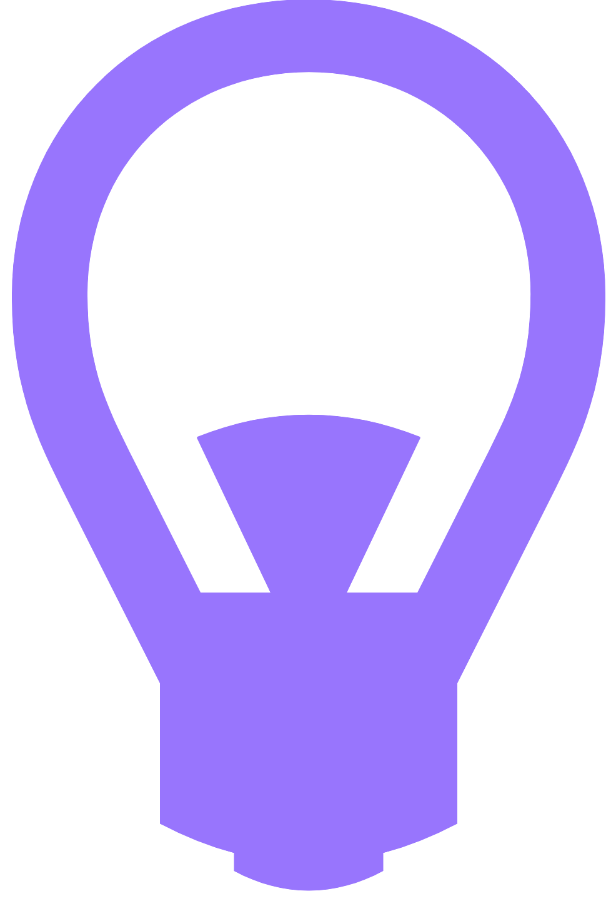
Ideating
Taking brainstormed ideas and ideating them into a low-fidelity prototype. Researching competitors to define our unique selling point and deciding upon our in-app features.
Prototyping
Prototyping our medium-fidelity prototype based upon the features we had decided to implement.
Overview
In a world where couples are constantly entering into long-distance relationships, how can we bring them closer together?
It is already difficult enough to be in a long-distance relationship. How might we make it easier for long distance couples to stay connected — to maintain that spark that keeps the relationship going?
Meet Fang
Fang is a full-time college student who also works part time as a front-desk agent, looking to re-ignite the spark with her significant other. She wants to engage more with her partner, but is having difficulty due to her busy schedule, feeling disconnected because of not knowing about his interests since going long distance, and a lack of interesting things to do together after a year apart.
Problem Statement
Fang has a lot on her plate with schoolwork and her part-time job. Her partner lives and works in another part of the world, and she needs to find a way to connect with him beyond just talking quickly about their days.
How might we help Fang find interesting activities to experience with her partner?
Step 1: Brainstorming
In order to determine what Fang needs, we conducted secondary research on what tools people her age used to stay in touch. According to a 2018 paper by Soto Herara, LDR users most frequently communicated via: Instant Messaging, Telephone, Online Video Chat, Online Audio Chat, and Social Media.
Cross-correlating with our team's primary research, couples did not find these technologies sufficient for a sense of "closeness." What couples needed was a shared space, inside jokes, and time spent together — not just a medium for contact.
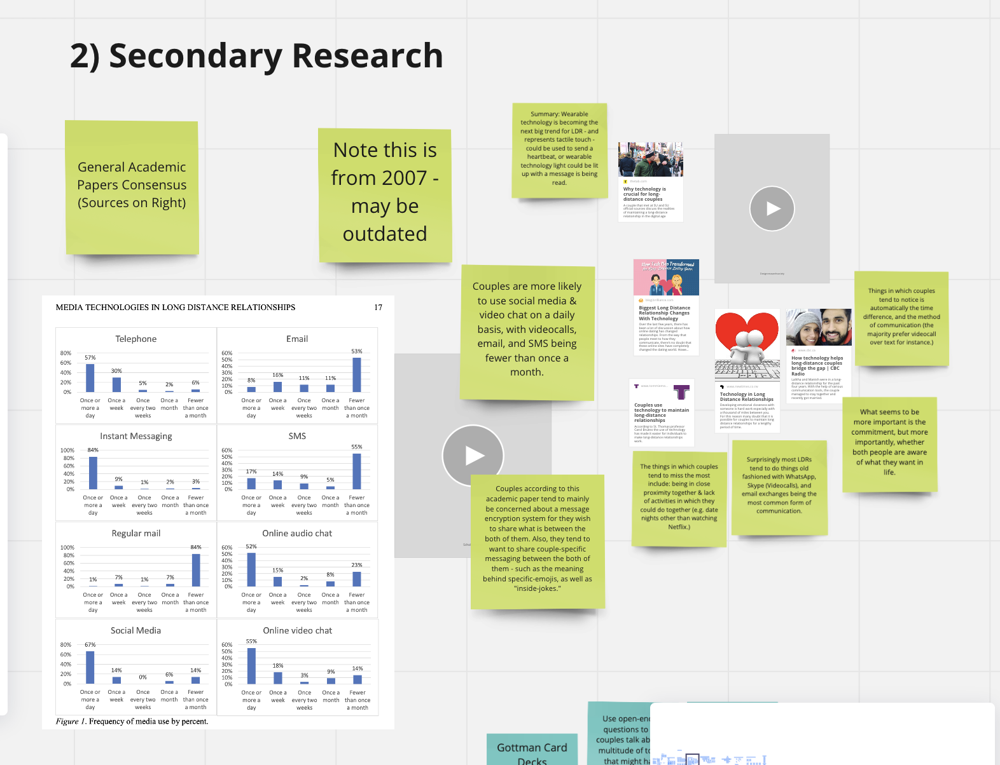
Persona Creation: Identifying Pain Points
Based upon our secondary research, we defined Fang's various pain points and fleshed out her motivations, goals, and interests. After forming multiple POV Statements, we determined that Fang's main priority was coordinating activities with her partner — accounting for the drastic time difference and the stress of daily life.
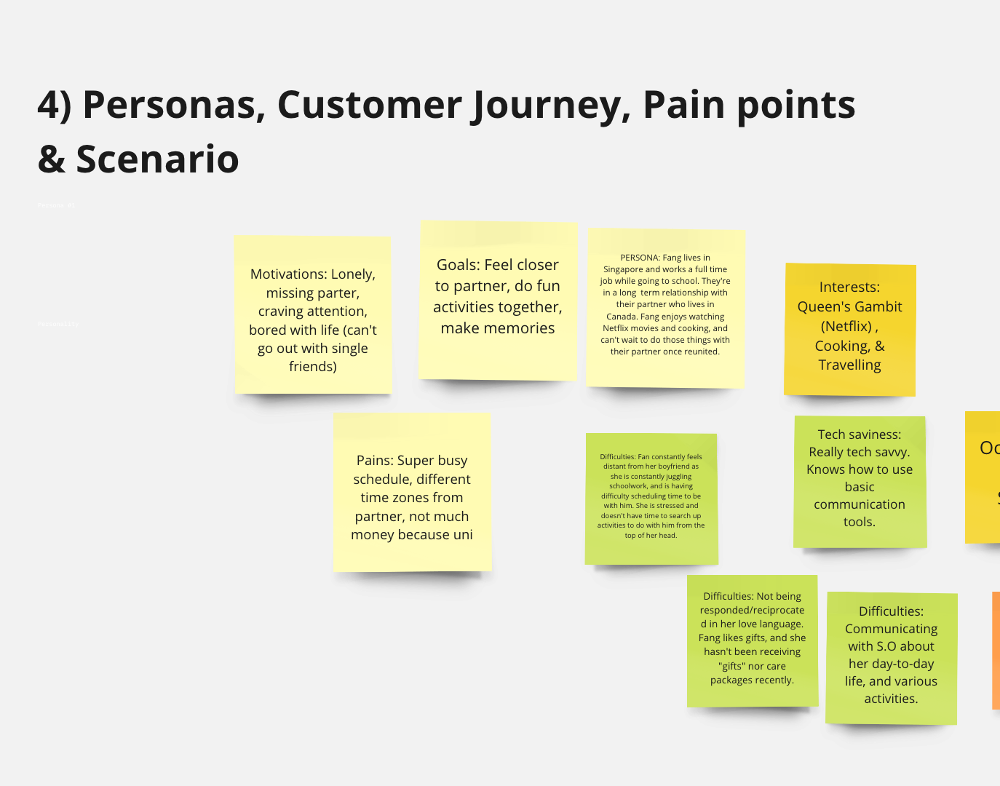
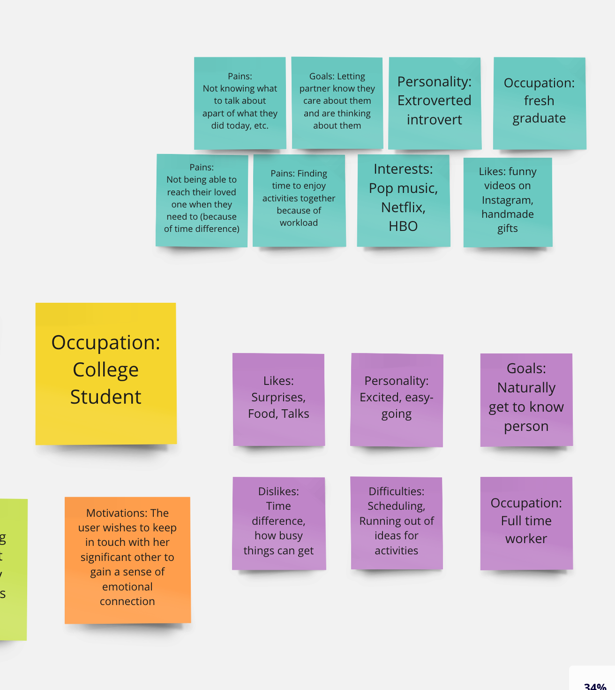
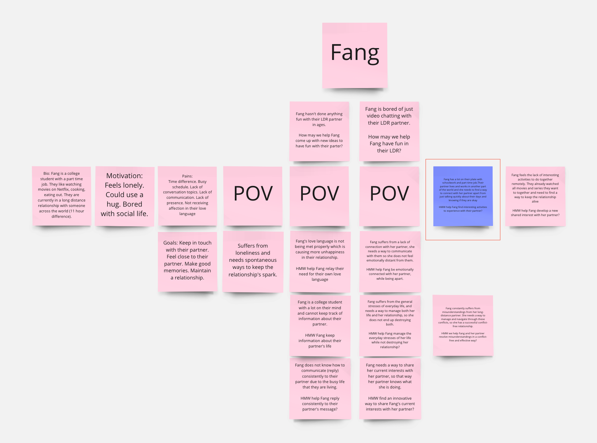
Step 2: Ideating
Competitor Research: A competitor matrix was established comparing in-app features across existing relationship apps. We found a saturation of writing-based journaling apps, but barely any focused on date planning — particularly long-distance date planning. We decided to pursue that gap.
Prioritization Matrix: Based upon our proposed prototype direction, we used a prioritization matrix to decide on the most crucial features, focusing on high-value actions like picking and selecting activities to do together.
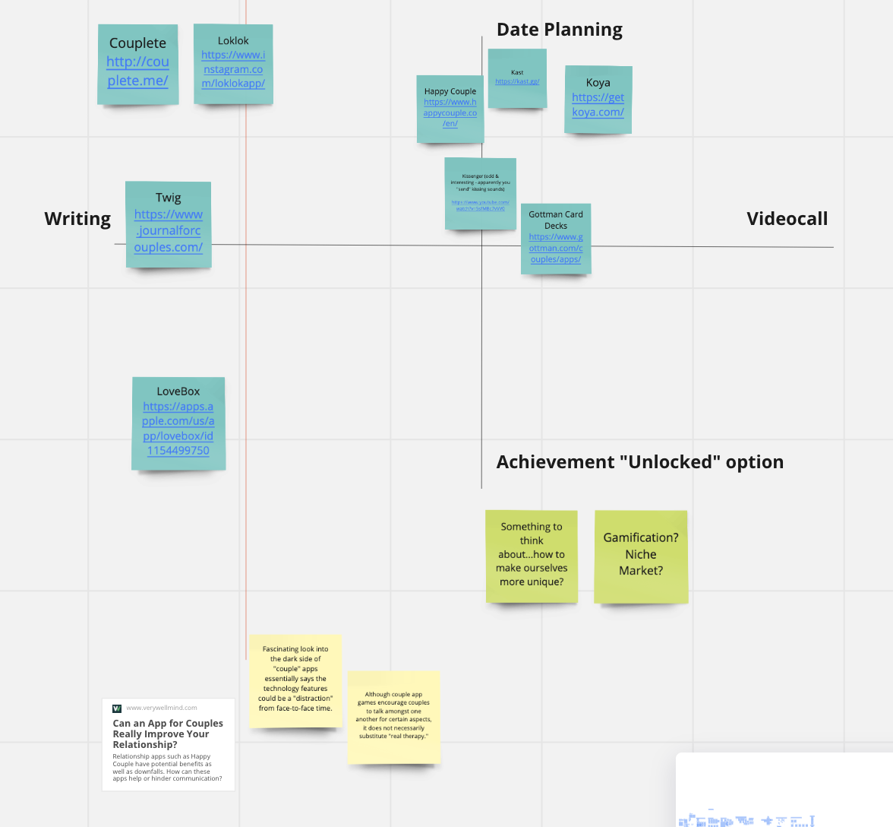
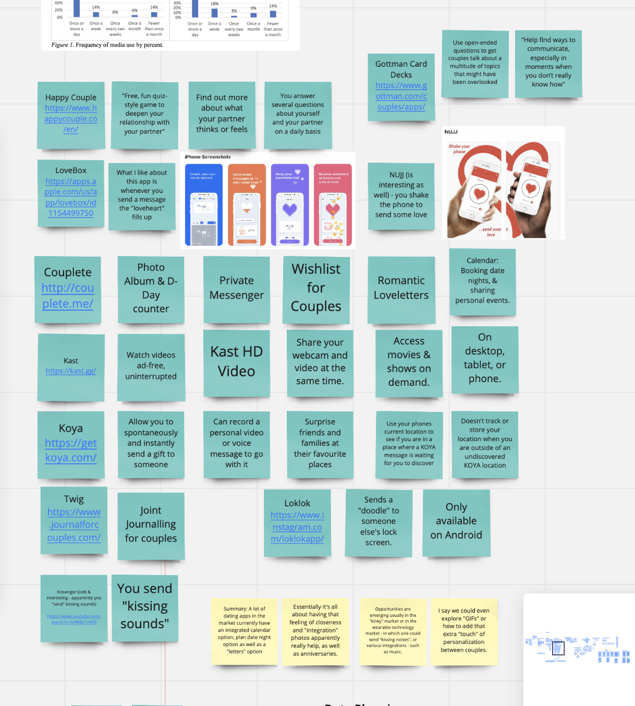
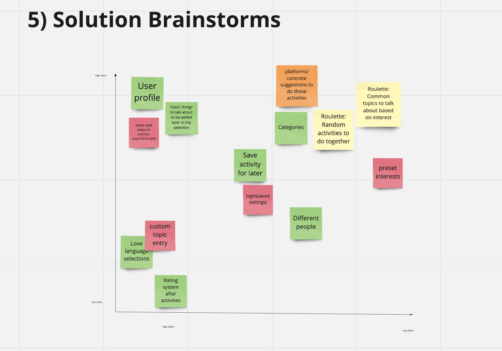
Step 3: Prototyping
Based upon the features outlined in our prioritization matrix, we designed our medium-fidelity prototype. The app had 3 main features: Room Joining, Picking Activities, and Adding Activities to a To-Do List.
Prototype Features

Room Joining
To do activities together, a couple joins a room. Rooms can be created on the spot, or someone can join via a Room ID.

Picking Activities
Users can browse through various activities in the app, select which ones they want to do, and save them to a To-Do List.
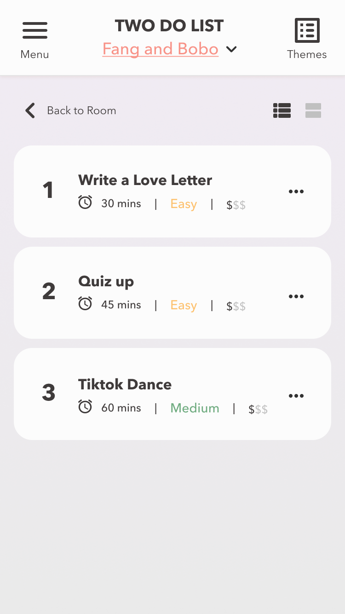
To-Do List
Activities are saved to a To-Do List for later. Activities are ranked by level of difficulty, cost, and time duration.
Outcomes & Results
Our team successfully completed a medium-fidelity prototype within 24 hours across different timezones.
There were difficulties deciding on the initial app concept — we originally planned something similar to an "activity roulette" option, but the concern was that conversation would feel too forced. It would have been better to test our initial paper-prototype in person with couples to identify these flaws sooner.
In the end, we focused on serving as an activity generator for couples — a simpler and more natural solution. Overall, this was an interesting project to work on, and I enjoyed collaborating with the team.